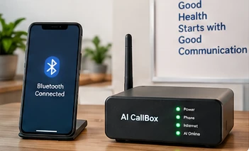
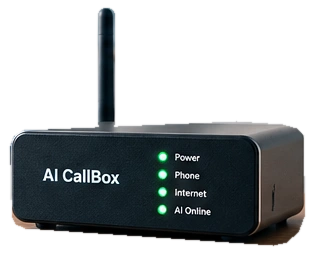

THE FAMILIAR, MADE USEFULYour phone.
Your phone.
With a little superpower.
Explore a Bluetooth gateway designed to bridge an existing phone and your voice agent.

Concept scene · not a shipping productThe little box with a big hello. A concept that connects your existing phone to an AI front desk — and gives you more time for the people in front of you.

A familiar phone.
A more thoughtful front desk.
01 / MEET YOUR NEW PLUS-ONE
Not another phone system to learn.
A new layer of possibility for the one
your customers already know.
Explore a Bluetooth gateway designed to bridge an existing phone and your voice agent.

Concept scene · not a shipping productProposed workflows. Real integrations are a later build step.
In a clinic, the agent can help with admin. It must not diagnose, prescribe or decide that a medical concern is safe.
02 / A CONVERSATION, NOT A PHONE TREE
Pick a business. Play a call. See how a simple conversation becomes a useful next step.
Scripted simulation, not a live phone call. No microphone access, real booking or connected calendar. Optional audio uses your browser's available voice service.
Every conversation should end
with a clear next step.
Press play to meet your AI front desk.
03 / OPEN THE BLACK BOX
The gateway can change.
The agent, tools and safety layer
share the same foundation.
Your SIM and carrier still handle the telephone connection. The proposed gateway pairs as a Bluetooth hands-free device.
A composable pipeline transcribes speech, runs a text agent, then generates voice. More component control; more interfaces and latency budgets to manage. No model is connected in this demo.
04 / THINK BEFORE YOU SCALE
Hardware can remove a provider layer. It does not remove the cost of AI, connectivity or keeping things reliable.
Editable assumptions. Not vendor pricing.Illustrative only. Excludes tax, extra call legs, forwarding, messaging, engineering, support and compliance costs. SIM terms and concurrency must be validated. Lower spend is not guaranteed.
05 / FROM A GOOD IDEA TO A WORKING THING
A clear build path.
With proof at every step,
not promises at the finish line.
Concept delivered. The website, simulator and planning tools work locally. No telephone hardware or patient systems are connected.
THE QUESTIONS WORTH ASKING
This is a buildable direction,
not a finished appliance.
The Bluetooth concept uses your existing smartphone and SIM; it is not number porting. Whether pairing, call audio and recovery behave reliably must be tested on your exact phone. A cloud-provider route may instead use forwarding, a new number or an eligible SIP connection.
No. This website is an interactive prototype with scripted conversations and editable planning numbers. It does not access your microphone, place a call, connect a device or create a real appointment.
For the phone-based prototype, start with local handset takeover or a callback request. A transfer to another telephone number is not automatic: it needs a tested carrier/PBX bridge or another supported call path. Never route a fallback back into a number that forwards to the bot.
No. The initial target is an original ESP32 with Bluetooth Classic HFP support, not just any ESP32-branded board. The firmware, audio interface, Bluetooth/Wi-Fi coexistence and handset compatibility still require a bench prototype.
A real deployment needs a suitable AI/recording notice, minimal data collection, access control, retention rules and clinic-approved escalation. In this demo, examples are fictional and processing is local. Medical requests must not be diagnosed or automatically classified as safe by the receptionist.
KEEP THE NUMBER. REIMAGINE THE HELLO.
Start with a local build brief. No sign-up, no sales call.